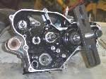
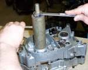

The crankcase is the aluminium housing at the bottom of the engine. It holds the crankshaft, the gearbox shafts, the shift drum and, on most small bikes, the oil. It is cast in two halves that bolt together.
What it does
The halves carry the main bearings for the crankshaft and the gearbox. They locate everything in exact line. On a two-stroke the sealed crankcase also forms part of the intake path, so it must hold pressure. The seam between the halves is sealed with a gasket or a thin film of sealant.
Signs it is worn or failing
- Oil weeping along the seam, or fresh oil on the underside. See Oil leaking under the bike.
- A two-stroke that is hard to start, idles badly or runs lean from a crankcase leak.
- Metal in the oil or a rumble from the bearings when a bearing seat has turned in the case.
- Cracks or broken fins after a crash, or a stripped bolt hole.
When to replace it
A cracked case, or a bearing seat that is worn oval, usually means a new case set. Small cracks may be welded by a specialist. Cases are always sold and replaced as a pair.
What to match when buying
- Give the engine code and number, not just the model. Cases of similar engines are not always the same.
- Ask whether the pair comes with bearings and seals fitted. Used cases should be checked for straight bearing seats and clean threads.
- Buy a gasket set or the sealant the manual names. Some engines have no case gasket, others must have one.
Fitting notes
- Splitting the case is a workshop job. The engine must be out of the frame, with the clutch, shift linkage and, on vertically split engines, the top end removed. See Split the crankcase.
- Do not pry the halves apart. Tap only on strong parts with a soft hammer, or use the puller tool that bolts to the case.
- Clean both mating faces. Use only a thin layer of sealant so no lumps can reach the oil screens.
- If the manual calls for a gasket, use one. Sealant alone can leave the shafts without enough clearance.
- Turn the gearbox through every gear before bolting down fully.